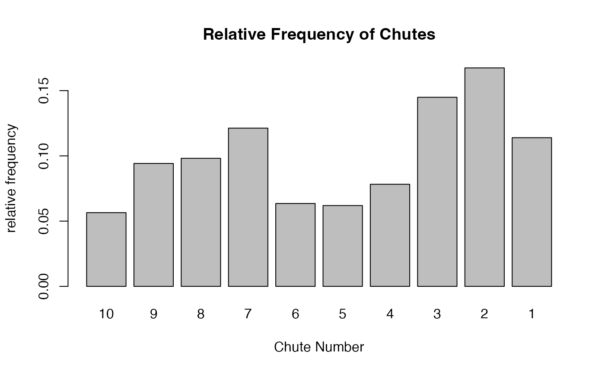

ChutesAndLaddersExample.RmdThis is a demo vignette for the package ChutesAndLadders.
We will define and create a game board for an old-fashioned game Chutes and Ladders, demonstrate a solo player game, perform simulation, visualize the results, and answer some statistical questions.
The following lines of code runs the entire example
#Create a single `board` where you store the features of the game board.
h <- 10
w <- 10
ladder <- list(c(1, 38), c(4,14), c(9,31), c(21,42), c(28,84), c(36,44), c(51,67),c(71,91), c(80,100))
chute <- list(c(98,78), c(95,75), c(93,73), c(87,24), c(64,60), c(62,19), c(56,53), c(49,11), c(47,26), c(16,6))
board <- define_board(h, w, ladder, chute)
# par() should help the plot be more visible.
par(mar = c(0, 0, 0, 0))
# show_board(board)
show_board(board)
set.seed(5)
play_solo(board, verbose = TRUE)
#> Turn 1
#> Start at 0
#> Spinner 2
#> Landed on 2
#>
#> Turn 2
#> Start at 2
#> Spinner 3
#> Landed on 5
#>
#> Turn 3
#> Start at 5
#> Spinner 1
#> Landed on 6
#>
#> Turn 4
#> Start at 6
#> Spinner 3
#> Landed on 9
#> Ladder!
#> Turn ends at 31
#>
#> Turn 5
#> Start at 31
#> Spinner 1
#> Landed on 32
#>
#> Turn 6
#> Start at 32
#> Spinner 1
#> Landed on 33
#>
#> Turn 7
#> Start at 33
#> Spinner 5
#> Landed on 38
#>
#> Turn 8
#> Start at 38
#> Spinner 6
#> Landed on 44
#>
#> Turn 9
#> Start at 44
#> Spinner 3
#> Landed on 47
#> Chute!
#> Turn ends at 26
#>
#> Turn 10
#> Start at 26
#> Spinner 3
#> Landed on 29
#>
#> Turn 11
#> Start at 29
#> Spinner 6
#> Landed on 35
#>
#> Turn 12
#> Start at 35
#> Spinner 2
#> Landed on 37
#>
#> Turn 13
#> Start at 37
#> Spinner 5
#> Landed on 42
#>
#> Turn 14
#> Start at 42
#> Spinner 4
#> Landed on 46
#>
#> Turn 15
#> Start at 46
#> Spinner 2
#> Landed on 48
#>
#> Turn 16
#> Start at 48
#> Spinner 5
#> Landed on 53
#>
#> Turn 17
#> Start at 53
#> Spinner 3
#> Landed on 56
#> Chute!
#> Turn ends at 53
#>
#> Turn 18
#> Start at 53
#> Spinner 1
#> Landed on 54
#>
#> Turn 19
#> Start at 54
#> Spinner 6
#> Landed on 60
#>
#> Turn 20
#> Start at 60
#> Spinner 4
#> Landed on 64
#> Chute!
#> Turn ends at 60
#>
#> Turn 21
#> Start at 60
#> Spinner 3
#> Landed on 63
#>
#> Turn 22
#> Start at 63
#> Spinner 2
#> Landed on 65
#>
#> Turn 23
#> Start at 65
#> Spinner 5
#> Landed on 70
#>
#> Turn 24
#> Start at 70
#> Spinner 2
#> Landed on 72
#>
#> Turn 25
#> Start at 72
#> Spinner 2
#> Landed on 74
#>
#> Turn 26
#> Start at 74
#> Spinner 3
#> Landed on 77
#>
#> Turn 27
#> Start at 77
#> Spinner 1
#> Landed on 78
#>
#> Turn 28
#> Start at 78
#> Spinner 2
#> Landed on 80
#> Ladder!
#> Turn ends at 100
#> $turns
#> [1] 28
#>
#> $ladder_tally
#> [1] 0 0 1 0 0 0 0 0 1
#>
#> $chute_tally
#> [1] 0 0 0 0 1 0 1 0 1 0
#>
#> $move_log
#> [1] 0 2 5 6 31 32 33 38 44 26 29 35 37 42 46 48 53 53 54
#> [20] 60 60 63 65 70 72 74 77 78 100
sim <- simulate_board(board, n=10000)
newturns <- sim[[1]]
newladder <- sim[[2]]
newchute <- sim[[3]]
#The distribution of number of total turns
hist(newturns, breaks = 50, main = paste("Histogram of the turns" ))
#Frequency of ladders
barplot(colSums(newladder)/sum(newladder),
main = "Relative Frequency of Ladders",
xlab = "Ladder Number",
ylab = "relative frequency")
#Frequency of chutes
barplot(colSums(newchute)/sum(newchute),
main = "Relative Frequency of Chutes",
names.arg = seq(length(board[[4]]),1,-1),
xlab = "Chute Number",
ylab = "relative frequency")
The above simulation can help answer a lot of questions. Let us take a look.
min(newturns) #minimum nubmer of turns
#> [1] 7
max(newturns)
#> [1] 301
median(newturns)
#> [1] 34
mean(newturns)
#> [1] 40.4731